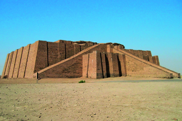

Lezione 2  Le antiche civiltà del Mediterraneo
Le antiche civiltà del Mediterraneo

BABILONIA
Il codice di Hammurabi è la raccolta di leggi scritte che regolava la società babilonese: nel bassorilievo che sormonta la stele in diorite che lo tramanda vediamo il re Hammurabi, a sinistra, in atto di ricevere il codice dal dio della giustizia Shamash, seduto in trono. Fondata nel 1800 a.C., Babilonia è considerata il primo esempio di metropoli nella storia umana. Nel periodo dell'Impero di Hammurabi essa contava centinaia di migliaia di abitanti di lingue e culture diverse e conteneva meravigliosi monumenti come la ziqqurat e i giardini pensili. Per tutte queste sue caratteristiche si suole identificare Babilonia con la Babele della Bibbia. L'astronomia babilonese è considerata uno dei primi esempi di metodo scientifico della storia: qui si applica per la prima volta la matematica, che i babilonesi sviluppano fino a concetti algebrici e algoritmici, e allo studio di un fenomeno, il movimento dei pianeti.DESERTO SIRIANO
Intorno al 2000 a.C. Gli amorrei, una popolazione nomade, migrano dal deserto siriano nella Mesopotamia centro-meridionale. Saranno loro che fonderanno due secoli dopo Babilonia e daranno vita alla civiltà babilonese, originata dalla sintesi fra la loro cultura e quella sumera.
UR
Le ziqqurat sono colossali strutture religiose in forma di piramidi a gradoni, il cui accesso è consentito soltanto ai sacerdoti: qui vediamo le rovine di quella di Ur, edificata in epoca sumera e più volte modificata e ricostruita.